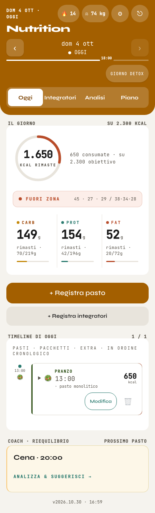
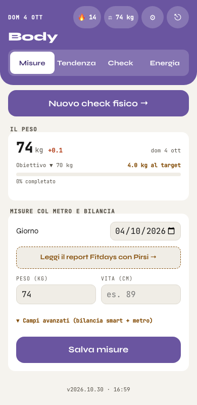
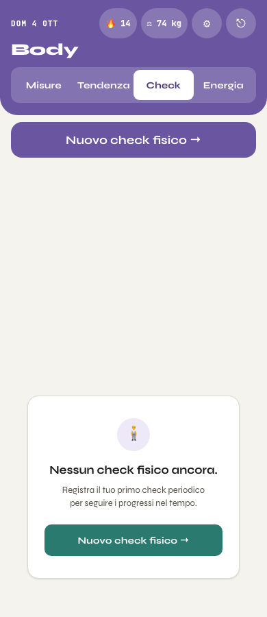
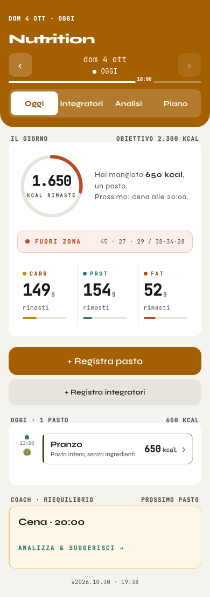
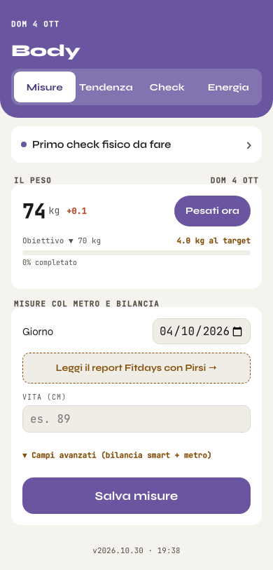
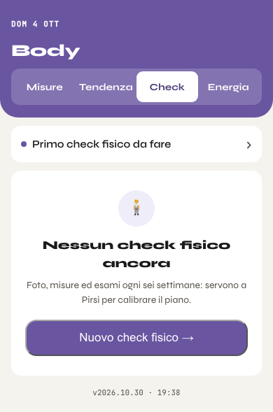
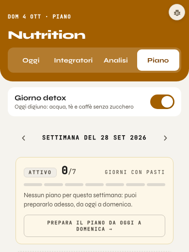

A sinistra le pagine vere di oggi (banco, 390 px, veste accesa, dati di prova del 4 ottobre: un pranzo da 650 kcal, pesata di oggi 74,0 kg, nessun check fisico fatto), a destra lo schizzo snellito. I tondi gialli 1 rimandano alle note del giro 1 (giro2_note.md): quattro di Nutrition, quattro di Body. I dati e le regole non cambiano: dayTotals e weighInsByDay restano la fonte dei numeri.



Foto, misure ed esami ogni sei settimane: servono a Pirsi per calibrare il piano.
body_logs continua a salvare gli altri campi e weighInsByDay resta la fonte del peso.Il check nel tab Body: riga sottile solo quando è da fare, come nello schizzo.
Fotografie delle pagine costruite, non più disegno: stessi dati di prova del 4 ottobre (un pasto da 650 kcal alle 13, pesata di oggi 74 kg, nessun check fisico fatto). Tutto dietro html.v5: a veste spenta Nutrition e Body sono identici al pixel. Nella testata non ci sono più fuoco, peso, ⚙ ed Esci, nemmeno in Training.




html.v5: a veste spenta Nutrition e Body restano identici al pixel. I numeri vengono dalle stesse funzioni di oggi (dayTotals per il giorno, weighInsByDay per il peso, getNextCheckpointInfo per il check): cambia cosa si mostra, non come si calcola. Nessuna lettura o scrittura nuova. La testata leggera tocca anche il Training fuori dalla seduta (stessa testata).